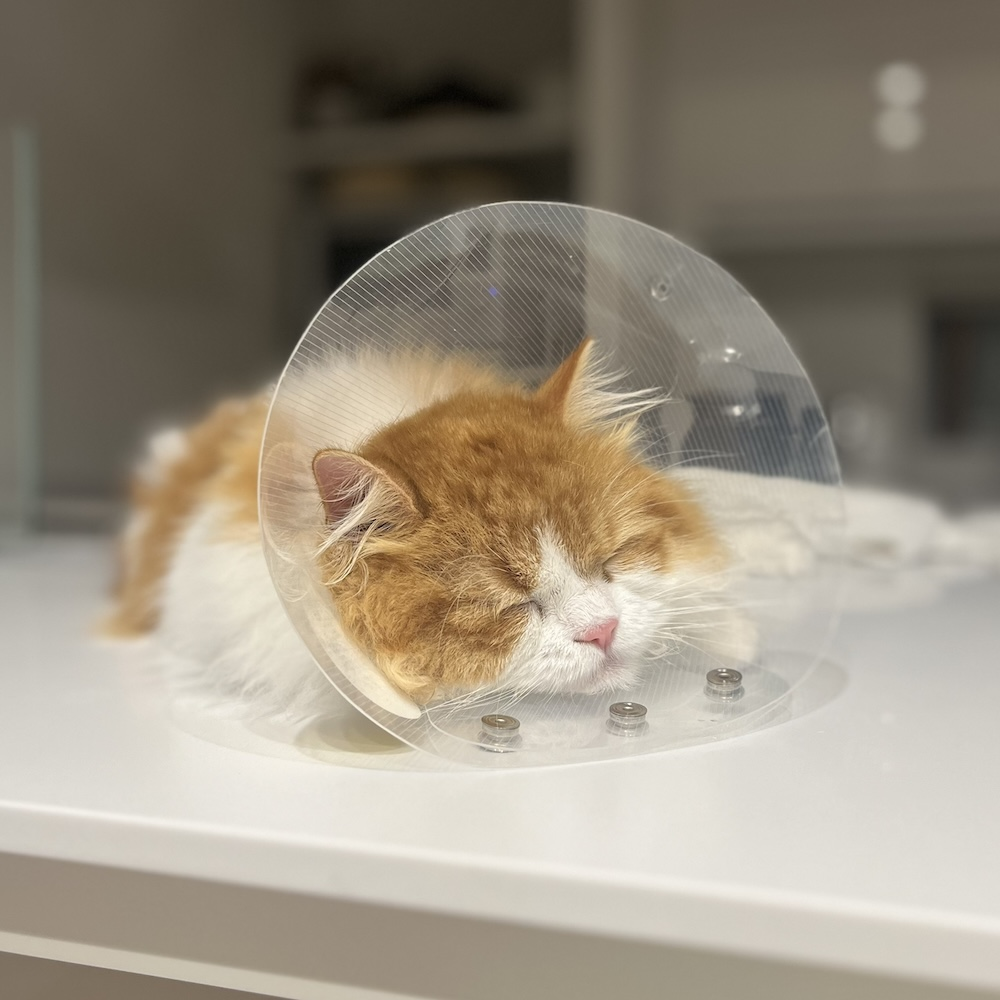

長毛のコメちゃんはよく毛玉ができます。
毎日ブラッシングしていても、お腹や足は嫌がってしっかりできないので、 特にできやすいです。
毛玉ができてしまった場合はペット用バリカンで取り除いています。
※猫の皮膚は伸びるので、ハサミでカットする場合は注意が必要です。
ペット用バリカンの使用用途は主に３つあります。
1.足裏の毛のカット:怪我防止や腰への負担軽減
2.肛門周りの毛のカット:うんち対策
3.毛玉の処理：皮膚炎防止
去勢手術後の２週間はしっかりとブラッシングができなかったので、 お腹と足が毛玉だらけになってしまい重宝しました。
